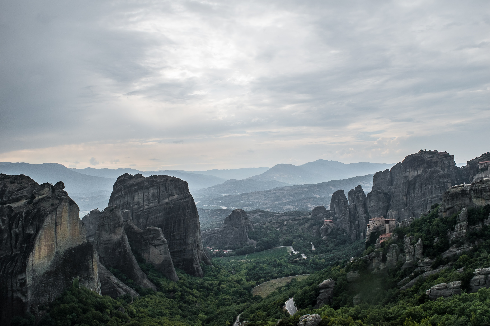
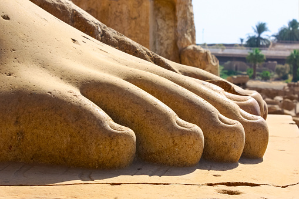
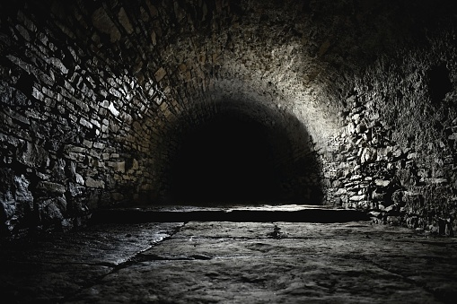

This sect was founded by the Void Sage-- via his personal Archlord acolyte, the magnificent
Eithan Arelius-- shortly after he successfully drove off the Wandering Titan.

Find us if you need...

salvation from a dreadgod
tips for splittling your core

a tour of the labyrinth
an autograph from the Uncrowned Queen
They'll take just about anyone, you know. It doesn't matter what Path you're on. And they have teachers you
wouldn't believe! The sect founder is a Sage!
- Early sect recruit